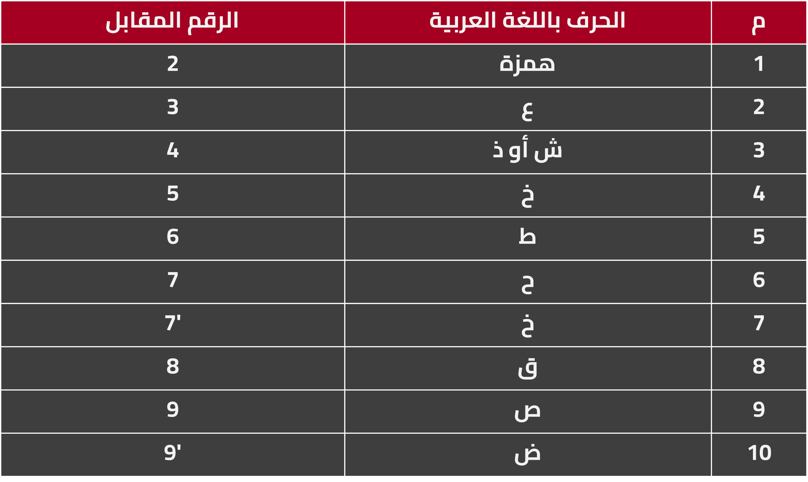

تعتبر لغة الفرانكو من اللغات التى ظهرت حديثا فى الوطن العربى وهى عبارة عن كتابة اللغة العربية بحروف انجليزية وارقام نقدم لكم من خلال هذا الموقع تطبيق يقوم بتحويل اى نص او كلام من فرانكو الى عربى او من عربى الى فرانكو ويقوم بترجمة الفرانكو الى عربى ويقوم بترجمة العربى الى فرانكو ايضا بأستخدام طريقة سهله وبسيطه فقط قم بكتابة الكلام الذى تريد ترجمته وسوف يقوم البرنامج تلقائيا بترجمته وتحويله كما تريد حيث تستطيع تحديد ما اذا كنت تريد التحويل من العربية الى الفرانكو او من الفرانكو الى العربى.
منذ عدة سنوات ظهر نوع جديد من الكتابة أطلق عليه الفرانكو، وقد لاقت هذه الكتابة شعبية كبيرة خاصة بين الشباب لسهولة استخدامها عبر مواقع التواصل الاجتماعي المختلفة، وانتشرت بسرعة كبيرة، إلا ان البعض قد اعترض عليها لأنها تشوه اللغة العربية .
الفرانكو ليست لغة متعارف عليها بالمعني الحرفي، ولكنها مجرد طريقة للكتابة تجمع بين الحروف العربية والارقام اللاتينية لتسهيل التواصل بين الاشخاص، وكان استخدام الارقام ضرورياً للوصول الي بعض اصوات الحروف العربية الغير موجودة في اللغة الانجليزية .
ما هي الترجمة الفرانكو
الفرانكو كما ذكرنا هي لغة تتكون من حروف وارقام غير رسمية ظهرت في السنوات الاخيرة بعد انتشار الانترنت ومواقع التواصل الاجتماعي، ويعتمد الكثير من الاشخاص علي استخدام هذه اللغة للدردشة عبر الانترنت، يتم كتابة هذه اللغة بحروف انجليزية وارقام لاتينية ولكن يتم نطقها باللغة العربية .
كيفية فهم الفرانكو
يتم قراءة لغة الفرانكو بأصوات عربية حسب الحروف الانجليزية المكتوبة، ويتم استخدام الارقام كالتالي :
سبب انتشار الفرانكو
بعد انتشار الرسائل النصية عبر الهواتف المحمولة والأجهزة الذكية وزاد استخدام شبكات التواصل الاجتماعي والبريد الالكتروني وغيرها، لم تكن الابجدية العربية متاحة في العديد من الاجهزة، ولذلك لجئ بعض الشباب الي استخدام الابجدية اللاتينية للكتابة، فكانوا يقومون باستخدام الحروف الانجليزية للتعبير عن الكلمات والجمل العربية للتواصل، ولكن حتي بعد اضافة اللغة العربية الي جميع الاجهزة والهواتف، استمر الشباب في استخدام هذه اللغة للتعود والسهولة، خاصة ان الحروف العربية تزيد من مساحة الرسائل وهذا ما يجعل الرسائل المدفوعة اكثر تكلفة .
كيف استخدم موقع ترجمة الفرانكو
يتم استخدام موقع ترجمة الفرانكو بكل سهولة، فالموقع يوفر الترجمة من اللغة العربية الي الفرانكو ومن الفرانكو الي اللغة العربية، عن طريق كتابة النص المراد ترجمته في الخانة المتاحة، ويتم الحصول علي الترجمة بشكل مباشر في خانة اخري، فهي وسيلة سهلة وسريعة جداً لترجمة الفرانكو .
مميزات استخدام الفرانكو
سهولة التواصل بين الشباب عبر مواقع التواصل الاجتماعي .
توفير الوقت وسهولة الكتابة للاشخاص الغير متوفر لديهم لوحات باللغة العربية أو اجهزة تدعم اللغة العربية .
عيوب لغة الفرانكو
يدعي الكثير من الاشخاص ان الفرانكو قد شوه اللغة العربية لدي الشباب والجيل الجديد،
نتيجه لإدمان هذه اللغة وكثرة استخدامها بين الشباب والاطفال، حدث اختلاط في التعبيرات بين اللغة العربية والفرانكو مما سبب ضعفاً لديهم في اللغة العربية .
ترجمة من عربي لفرانكو
واذا كنت تريد الترجمة من العربي لفرانكو يمكنك فهم في البداية تحويل بعض الحروف العربية التي يصعب تحويلها في اللغة الاجنبية ولذالك استعان الناس ببعض الحروف من اجل تحويل تلك الحروف الي ارقام مثال علي ذالك لا يوجد في اللغة الإنجليزية حرف الحاء لذالك استعان الناس برقم 7 من اجل تحويله لحرف الحاء وباقي الحروف التي تحولت لأرقام سبق ذكرها في الفقرات السابقة، اما اذا كنت تريد ان لا تبذل مجهود في التحويل وفهم كل هذه التفاصيل يقدم لك موقعنا ترجمة فورية من الفرانكو للعربي او من العربي الي الفرانكو بسهولة، كل ما عليك فعله هو نسخ النص في المكان المناسب وسيقوم الموقع بكل التفاصيل التي تصعب عليك، حتي اذا كنت تتحدث مع شخص بالفرانكو او العكس يمكنك استخدم الموقع بشكل لحظي.
تحويل الكلام الي فرانكو بسهولة
سبق ان تكلمنا عن كيفية تحويل الكلام وفهمه ولكن اذا اردت ان تحفظ مجهودك وتحوله بسهولة، فهذا هو الغرض الأساسي من انشاء موقعنا، حيث تقوم فكرة موقعنا علي الترجمة الي فرانكو او العكس الترجمة من الفرانكو الي العربي ومن اجل تسهل هذا الأمر يمكنك ان تقوم بأستخدام الموقع من خلال لصق النص المناسب ووضعه فيه.
أفضل موقع ترجمة فرانكو
اذا كنت تبحث حقاً عن أفضل موقع للترجمة من العربية الي فرانكو او العكس، نقوم في موقعنا بهذه المهمة بالفعل، لذالك يجدنا معظم المستخدمين من أفضل المواقع التي تقوم بهذه الخدمة للمستخدمين بشكل مجاني، ويدل علي ذالك المراجعات الإيجابية التي يرسلها لنا المستخدمين بشكل دائم، وايضاً محافظتنا علي تعديل وتحيث الخدمة بشكل مستمر، ويقوم الكثير من المستخدمين بالبحث عن موقعنا بالأسم من اجل الوصل لخدمتنا وهو ما يدل علي ولاء المستخدمين وحبهم لموقعنا بشكل خاص.
في النهاية فلا يمكننا ان نشبه الفرانكو باللغة العربية أو نطلق عليها اسم لغة من الاساس، ولكنها مجرد اسلوب تعبير أو وسيلة للتواصل بين الاشخاص لعدة ظروف، فالفرانكو لا تشوه اللغة العربية ولا تطمس هويتها بأي شكل من الاشكال، ولكننا من نقوم بذلك اذا اهملنا تعليم اللغة العربية للجيل الجديد، فاللغة العربية هي لغة القرآن وهي لغة العرب والمسلمين .